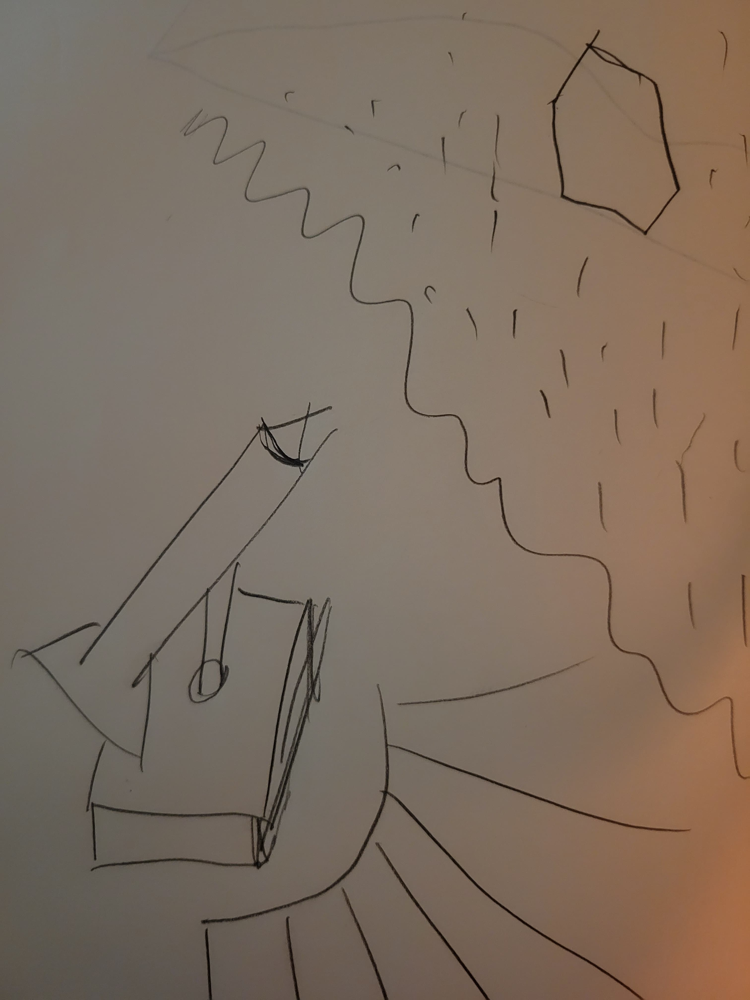
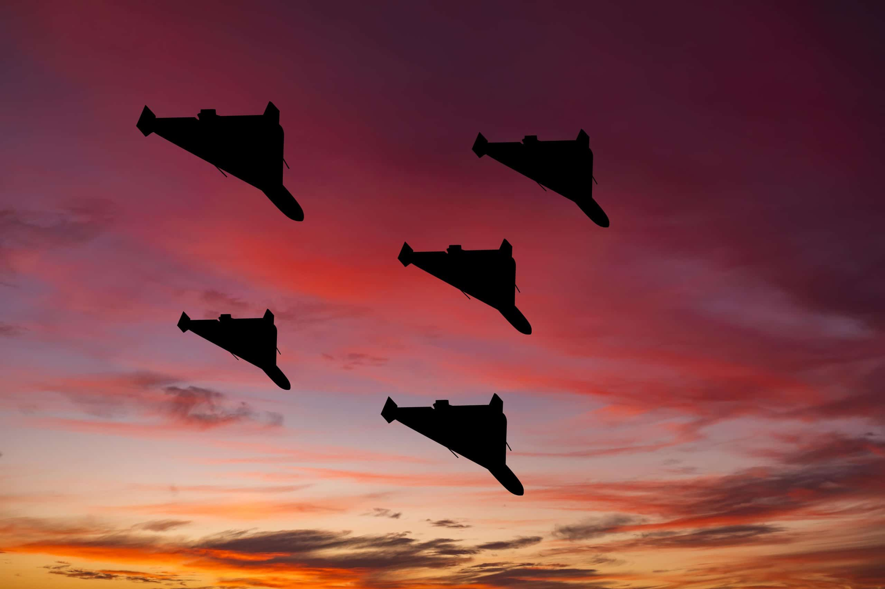
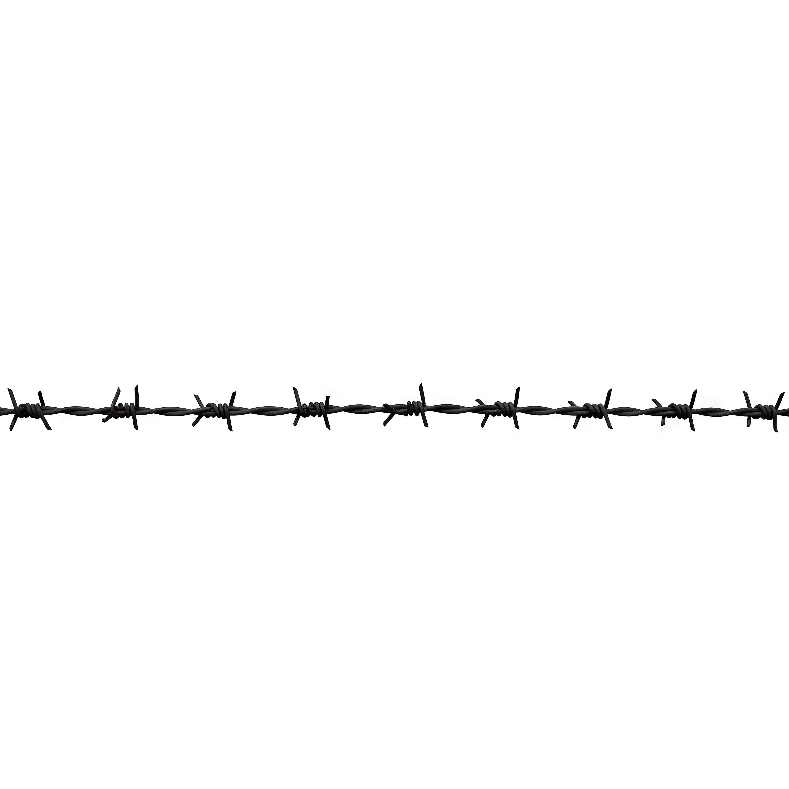
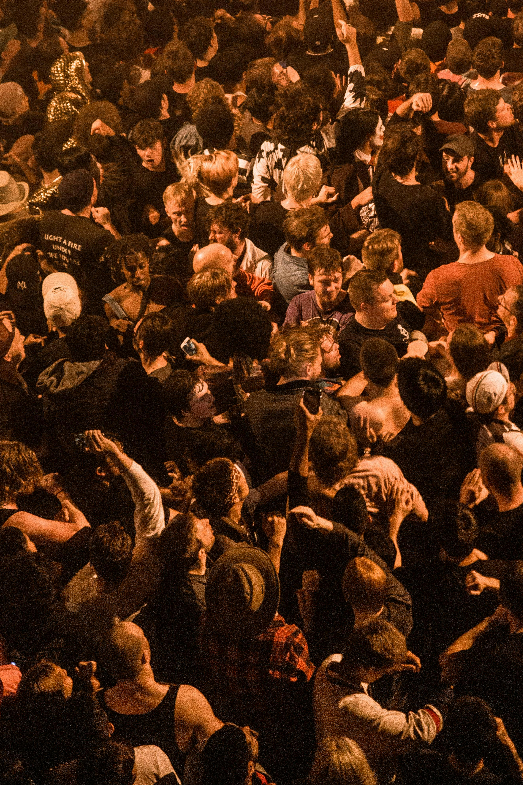
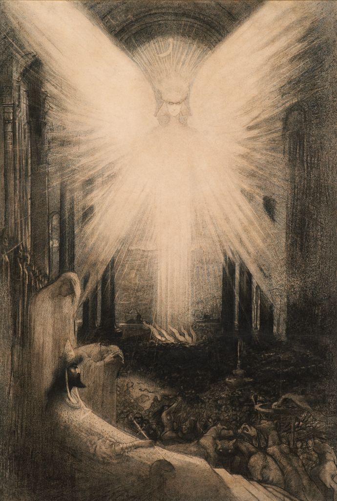
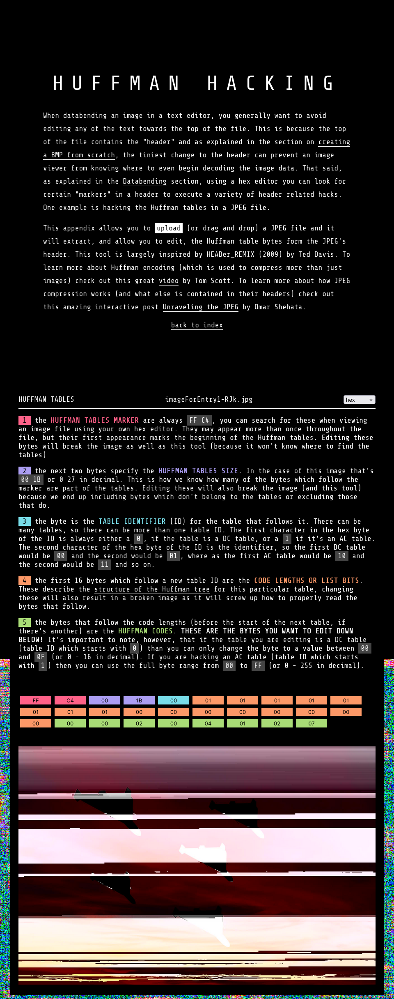
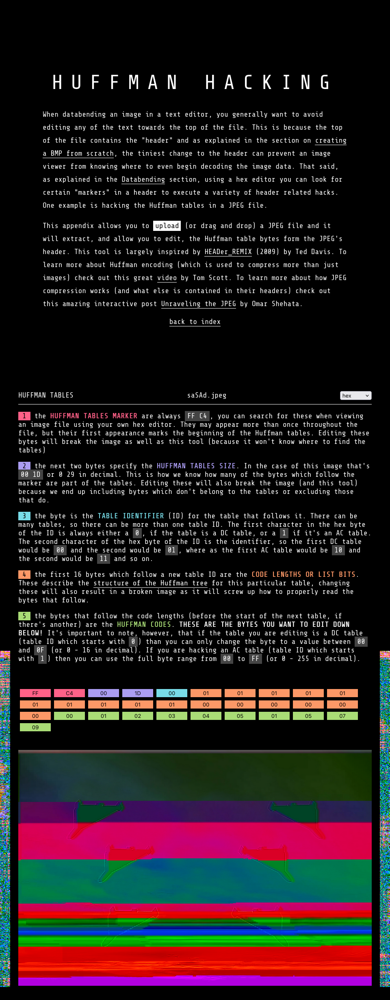

>azræl<
avatar(s): erebus nyx, li milan, nibiru fæ, polexia al-twal, surya samhita, tris kemet, wotan al-kitab
role(s): illustrator
associate(s): enne dawson
date(s): 03.2026
location(s): dallas, tx, usa
platform(s): gimp

abstract
lo, a harbinger of death with metal wings whose face shines like the daystar.
references to popular mobilization and sovereignty abound throughout this piece of glitch artwork alongside subversions of hegemonic iconography that gesture towards free association and impermanence. it coalesced out of simultaneous desires to interpolate an earworm by the breakout act, “geese,” and intertwine anti-imperialist principles with the practice of transformative self-portraiture. the ærial scene features six shahed drones flying through a twilight sky and flanking a specter through which the sun is visible. azræl, the angelic figure whose name means “god’s help,” is traditionally associated with mortality in the Abrahamic milieu. portrayed as manifesting during the crepuscular period, a liminal interval that connotes radical change, he heralds the end of empire, property, and alienation. visual artifacting generated using nick briz’s Huffman hacking tool further narratively emphasizes the disruption of established authority, hijacking the vulgar apocalypticism informing prevalent nationalist ambitions. moreover, the iranian unmanned combat ærial vehicles (ucavs) function as an allegory for the triumph of use value over the profit motive. their cost-effective deployment against sophisticated american and israeli targets is an indictment of the western military industrial complex as a wealth extraction front. barbed wire, often used for borders, incarceration, and warfare, frames this portion of the composition. this material serves as a vector of conflict and also creates an illusion of physical depth. surrounding this as a background image is the outer edges of a bird’s-eye view of a crowd in inverted greyscale. at once, this conveys estrangement through æsthetics and indicates the emancipatory intersubjective potential of embracing open borders in every sense and abolishing the commodity form.
process
prototype

references




_-_Jean_Delville.jpg){kind=link}
huffman hacking

